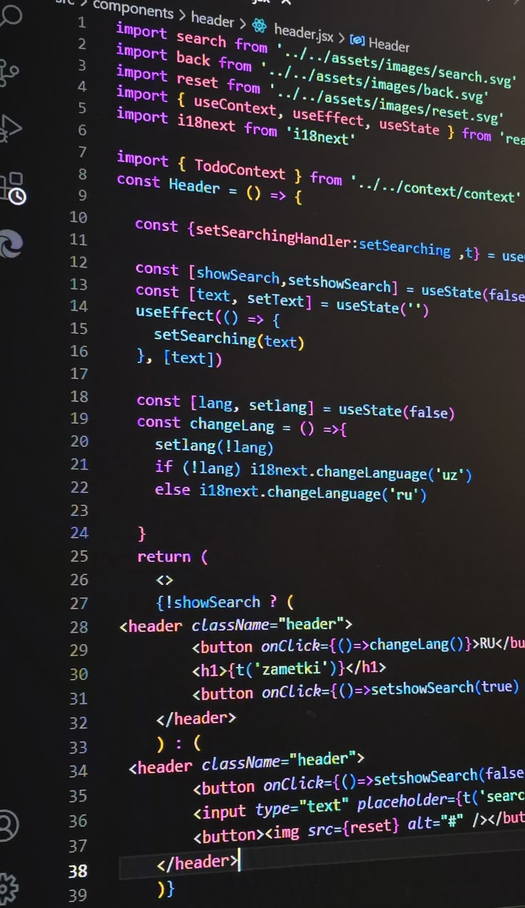
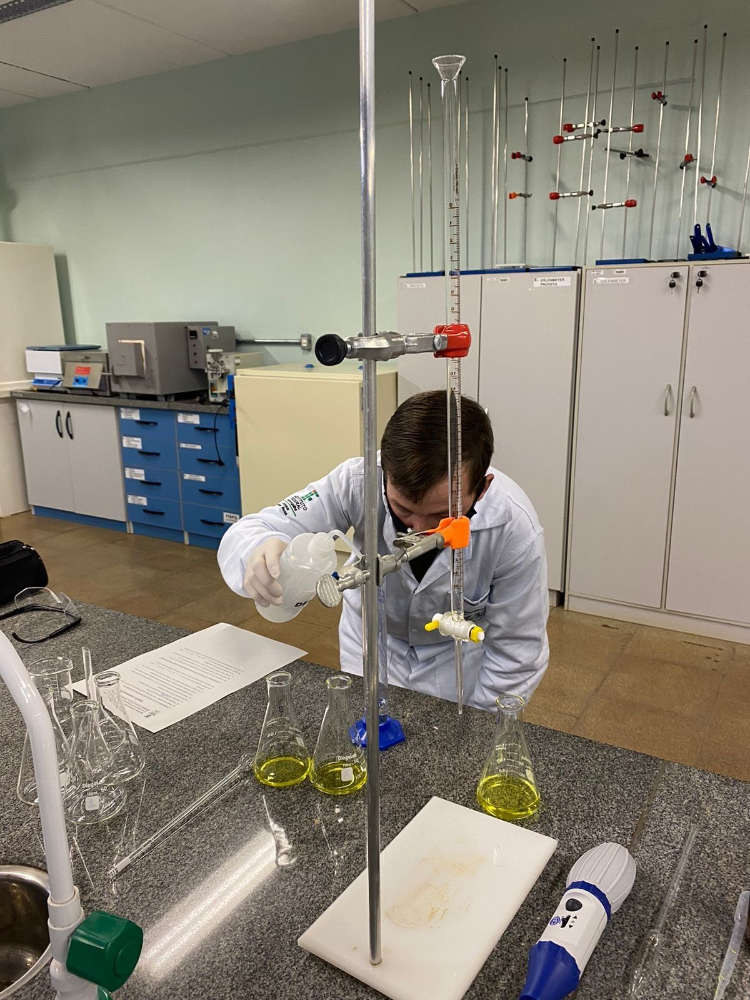
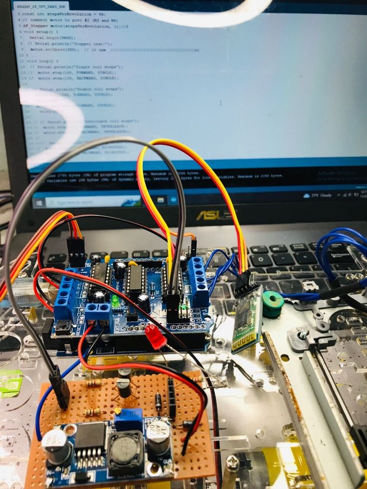

Carreras

Tecnicatura Superior en Desarrollo de Software
Multiplataforma:
Enseña a programar aplicaciones que funcionan en múltiples
dispositivos y sistemas operativos. Incluye desarrollo web, móvil,
bases de datos y metodologías ágiles.
El formulario de pre-inscripción requiere tener correo gmail y
adjuntrar imagen DNI (Anverso y reverso).
Duración de la Carrera: 2 años.

Tecnicatura Superior en Química Industrial:
Forma técnicos capacitados para trabajar en procesos industriales
químicos: producción, control de calidad, manejo de materiales y
cumplimiento de normas de seguridad e higiene.
El formulario de pre-inscripción requiere tener correo gmail y
adjuntrar imagen DNI (Anverso y reverso).
Duración de la Carrera: 3 años.
Tecnicatura Superior en Telecomunicaciones:
Abarca redes de datos, telefonía, sistemas de transmisión y
tecnologías inalámbricas. Prepara para instalar, configurar y
mantener infraestructuras de comunicación.
El formulario de pre-inscripción requiere tener correo gmail y
adjuntrar imagen DNI (Anverso y reverso).
Duración de la Carrera: 3 años.

Tecnicatura Superior en Mecatrónica:
Combina mecánica, electrónica e informática para diseñar y
mantener sistemas automatizados. Orientada a la industria 4.0:
robots, máquinas CNC, sensores y control automático.
El formulario de pre-inscripción requiere tener correo gmail y
adjuntrar imagen DNI (Anverso y reverso).
Duración de la Carrera: 3 años.